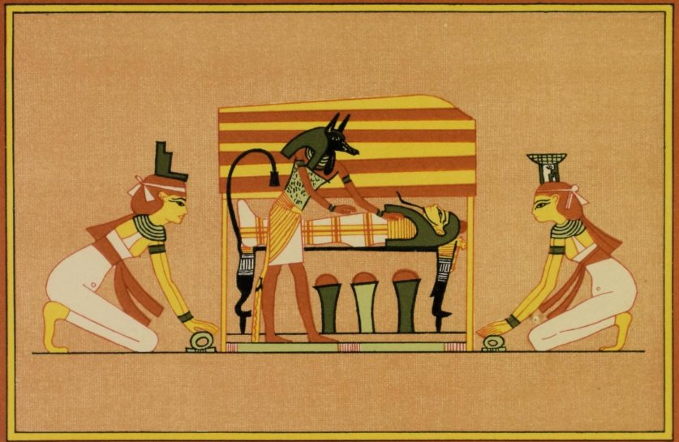
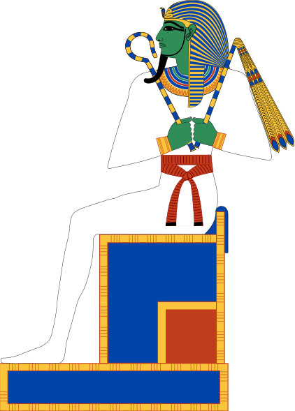
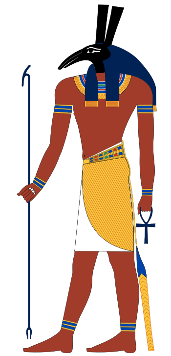
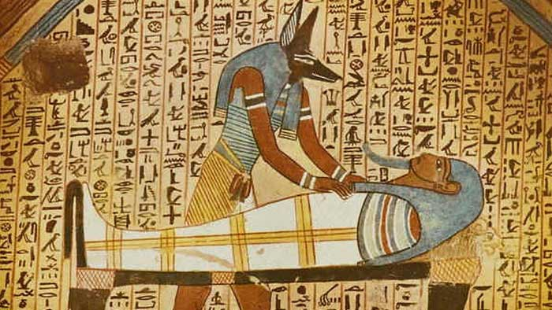
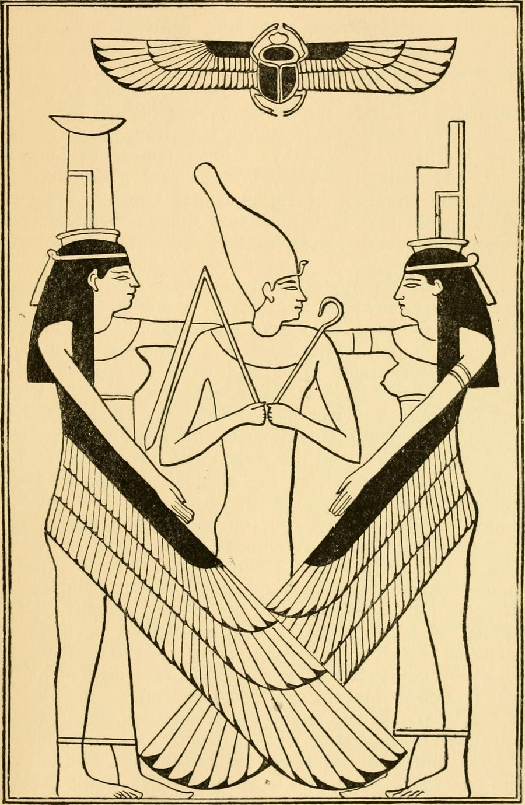
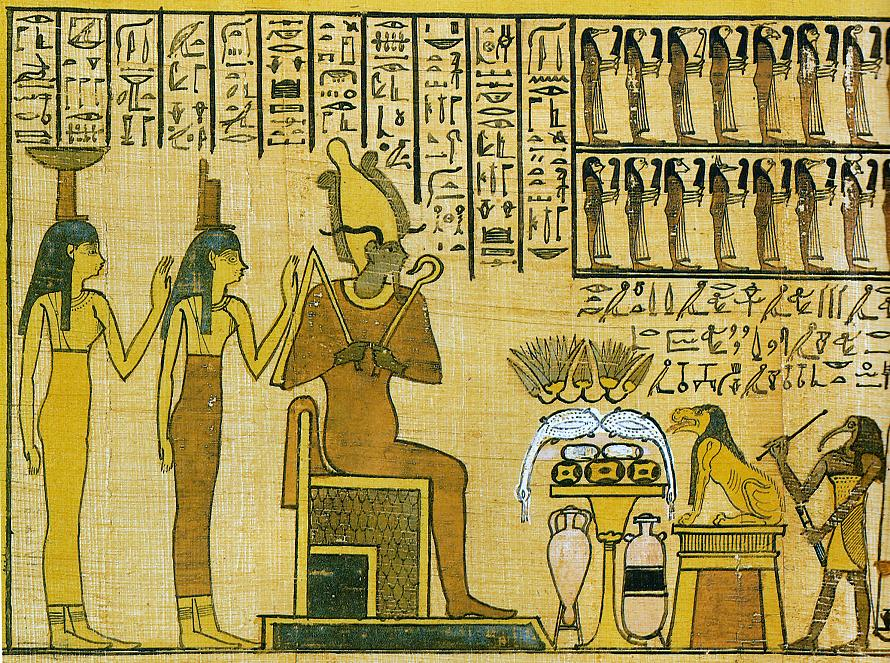
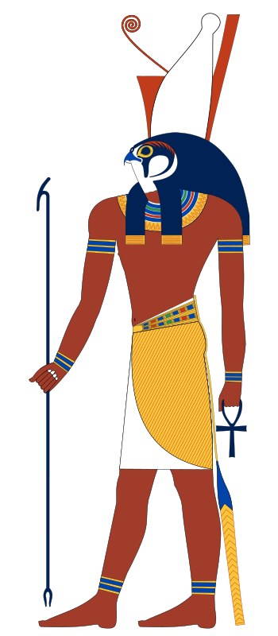

The myth of Osiris is the most famous story of ancient Egypt. Egyptian texts give only fragments of it, scattered through funerary spells, hymns and rituals. Its fullest version comes from a Greek author of the 2nd century, Plutarch, who gathered it in his treatise On Isis and Osiris. The story below combines these sources.
Re, who saw everything from the sky, discovered that Nut was expecting children by Geb. Fearing that one of them would overthrow him, he forbade her to give birth on any day of the year. Thoth, who loved Nut, found a way round it: he played dice with the Moon and won a share of her light, from which he made five new days, set outside the year. Since these days belonged to no month, Re’s ban did not apply to them.
On them Nut brought five children into the world: Osiris on the first day, Horus the Elder on the second, Seth on the third, Isis on the fourth and Nephthys on the fifth. Seth, it was said, would not wait his turn and burst out, tearing his mother’s side.
As the eldest son of Geb, Osiris inherited the throne of the earth. He married his sister Isis, while Seth took as his wife their other sister, Nephthys. Osiris was a benevolent king: he taught humans farming and the growing of vines, gave them laws and taught them to honour the gods. Then he travelled the world to spread civilisation, leaving Isis to govern Egypt in his absence.
According to one tradition, Nephthys one day lay with Osiris and gave birth to Anubis. Fearing Seth’s anger, she abandoned the child. Isis found him and raised him as her own son; Anubis became her faithful guardian.

Seth was the complete opposite of his brother. God of the desert, of storms and of violence, he was associated with the colour red and with barren lands, while Osiris embodied the black, fertile soil of the Nile valley. Jealous of his brother’s glory, he resolved to take his place.

Osiris was too powerful to be confronted openly, so Seth turned to cunning. In secret, he had his brother’s measurements taken and a magnificent chest made, adorned with gold and precious stones, exactly to his size. Then, with seventy-two accomplices and a queen of Ethiopia named Aso, he held a great banquet.
During the feast, Seth had the chest brought in and promised to give it to whoever lay down in it and filled it perfectly. The guests tried it one after another, without success. When Osiris’s turn came, the chest fitted him exactly. At once the conspirators slammed the lid shut, nailed it down and sealed it with molten lead, then threw the chest into the Nile. The river carried it all the way to the sea. Osiris had reigned, according to Plutarch, for twenty-eight years.
The death of Osiris plunged the universe into disorder: the sun struggled to rise, the earth dried up, gods and humans wept. According to a late papyrus, these very tears became a source of life: those of Re gave birth to the bees, which make honey and wax; his sweat made flax grow, and the blood of Geb gave rise to the pines and their resin. So even in death, Osiris went on bringing forth the good things of the earth.
Isis, in mourning, cut her hair and set out in search of her husband. Children who had seen the chest float by showed her the way. Carried by the waves, it had ended up washed ashore at Byblos, on the Phoenician coast, at the foot of a tamarisk. The tree had grown around the chest until it enclosed it entirely in its trunk. Amazed by its size, the king of Byblos had it cut down to make a pillar for his palace.
Isis went to the palace in the guise of an ordinary woman and became the nurse of the queen’s son. Every night, to make the child immortal, she laid his body in the fire to burn away his mortal part. One evening, the queen came upon the scene and cried out, breaking the spell. Isis then revealed her divine nature and asked for the pillar. She took the chest out of it and brought her husband’s body back to Egypt, where she hid it in the marshes of the Delta.
But one night Seth, hunting by moonlight, discovered the hiding place. Mad with rage, he cut the body of Osiris into fourteen pieces, which he scattered all over Egypt.
Isis did not give up. With Nephthys, she travelled the country in a papyrus boat and found the pieces one by one. It was said that she had a shrine built wherever she found one, which explained why so many Egyptian cities claimed to guard the tomb of Osiris. She gathered the whole body except for the phallus, which had been swallowed by a Nile fish: she replaced it with a replica shaped by magic.
Anubis, the jackal-headed god, then put the body of Osiris back together. He anointed it with oils, purified it and wrapped it in linen bandages: this was the first mummy, the model for all those that would follow.

Isis and Nephthys, changed into kites, fluttered around the body and cooled it with their wings, all the while chanting laments. Their magic gave Osiris back a breath of life, enough for Isis to unite with him and conceive a son: Horus, the avenger of his father.

Osiris did not, however, return to the living. He became the ruler of the world of the dead, where he has welcomed the justified dead ever since. From the silt of his body, it was said, came each year the Nile flood that makes the crops sprout; in the sky, the Egyptians recognised him in the constellation of Orion.

Isis knew that Seth would never let the rightful heir to the throne live. She took refuge in the marshes of Chemmis, in the heart of the Delta, where papyrus and reeds formed a natural rampart. There she gave birth to Horus, not to be confused with his uncle Horus the Elder, one of the five children of Nut. The child grew up in hiding, fed on his mother’s milk and protected by her magic, while Seth ruled over Egypt.

One day, as Isis was crossing the Delta with her son, seven scorpions escorted her to protect her: Tefen, Befen, Mestet, Mestetef, Petet, Tjetet and Matet. When evening came, she asked a rich lady for shelter, but the lady, frightened by this escort, shut the door in her face. A poor woman of the marshes, on the other hand, welcomed the goddess into her humble home.
To avenge Isis, the scorpions gave all their venom to one of them, Tefen, who crept into the rich lady’s house and stung her son. The child was on the point of death. Moved by the mother’s cries, Isis laid her hands on him and called each scorpion by name, ordering its venom to withdraw. The child was saved, and the rich lady, full of remorse, gave her possessions to the woman who had known how to welcome the goddess.
Horus himself was once stung by a scorpion while his mother was away. The cries of Isis were so heartrending that the bark of Re stopped in the sky. Thoth came down from it and spoke the spell that healed the child. The spells of Isis and Thoth were copied for centuries onto magical stelae, such as the famous Metternich Stela, to treat scorpion stings and snake bites.
Once grown up, Horus came before the Ennead to claim his father’s throne. Seth refused: he was the strongest of the gods, and it was he who, every night, defended the bark of Re against Apophis. The tribunal of the gods, presided over by Re, hesitated for eighty years, siding now with one, now with the other.
The two rivals then faced each other in a series of contests. Changed into hippopotamuses, they dived into the Nile: the first to come back up to the surface would lose. Isis, wanting to help her son, threw a harpoon into the water, but it struck Horus; with her second throw, she hit Seth, who begged her in the name of their kinship, and she released him. Later, Seth tore out the eyes of Horus and buried them. Hathor found the young god and restored his sight by pouring gazelle milk on his eyes. The Eye of Horus, or udjat, once restored, became the symbol of wholeness regained and one of the most widespread amulets in Egypt.
At last Seth proposed a race in stone boats. Horus used a trick: he built a boat of cedar wood and covered it with plaster so that it looked like stone. Seth, for his part, cut his boat from the top of a mountain, and it sank at once.
To settle the matter, the gods wrote to Osiris. His answer left no room for doubt: if the throne was refused to his son, he would send his messengers, the demons of the world of the dead, to seize the hearts of the guilty. Re and the Ennead finally came round to his view, and Horus was crowned king of the Two Lands.
Seth was not destroyed for all that. Re took him to his side in the sky, where his voice rumbles in the thunder, and his strength was put at the service of order: it is he who, from the prow of the solar bark, drives back Apophis. Horus became the model for every pharaoh: each living king was regarded as a Horus on earth, and at his death he became Osiris, ruler of the dead.